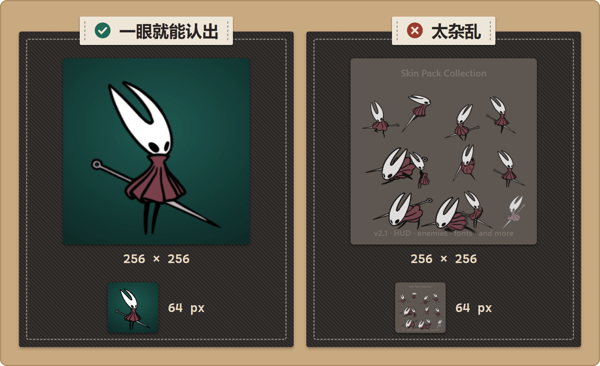

发布你的资源包
发布 · 面向创作者
你的资源包已经做好，也测试过了。
把它打包成 Thunderstore 的 zip，然后发布到丝之歌玩家平时找模组的地方。
你将学会：备齐 Thunderstore 需要的文件，写出正确的 manifest.json，再上传资源包，让其他人都能顺利安装。
开始之前
要发布资源包，你需要准备：
- 你的资源文件，按照标准目录结构放在
Stitchwork/文件夹下。 manifest.json——Thunderstore 必需的元数据文件。icon.png——尺寸必须正好是 256×256，用作模组页面上显示的图标。README.md——介绍你的资源包做了什么（Thunderstore 会把它显示在模组页面上）。- （可选）
cover.png——资源包管理器里，你的资源包卡片上显示的图片（参见资源包封面）。 - （可选）
CHANGELOG.md、截图，以及供别人二次创作的分层源文件。
发布之前，先在干净的环境里测试资源包（另开一个游戏文件夹，或者在模组管理器里另建一个管理器档案），完全照着你自己写的 README 走一遍。发布时最常见的问题就是“在我电脑上明明能用”：你自己的游戏里还装着别的资源包，或者改过某些设置，而玩家那里没有。
打包结构
按下面的结构摆放文件：
my-pack/
manifest.json
icon.png
README.md
CHANGELOG.md (optional)
Stitchwork/
pack.json (optional — your pack's Pack Manager name/author/version/description)
cover.png (optional — the image on your pack's card)
Sprites/
Spritesheets/
Sounds/
Text/
...模组扫描资源时，看的是里面那层 Stitchwork/ 文件夹（它也认 Patchwork/ 文件夹，照顾那些原本为上游 Patchwork 制作的资源包）。其余的都是 Thunderstore 打包用的元数据。
这三个元数据文件要放在 zip 的根目录，不能放进子文件夹。这是上传时最常见的错误，没有之一。压缩时，请选中
my-pack/里面的内容（manifest.json、icon.png、README.md和Stitchwork/文件夹），而不是选中my-pack/文件夹本身。
zip 的层级要尽量浅——每多一层文件夹，都会吃掉所有人的路径长度余量。模组管理器本来就会把你的资源包装进它自己创建的
plugins/TeamName-PackName/文件夹，而这个文件夹又位于管理器档案那层很深的目录里。Windows 的文件路径上限是 260 个字符，而游戏里最长的资源名称（光是Hornet CrestWeapon Scythe/就有大约 100 个字符）在安装位置嵌套太深时，就可能超出这个上限。这时文件会出错，报出让人摸不着头脑的“could not find a part of the path”错误，而且只有名字最长的那几张精灵图出错，排查起来能把人逼疯。zip 里多余的一层外壳文件夹，就是白白浪费掉 10–20 个字符的余量。2026 年 7 月的实际反馈证实了这一点：收割者纹章的动画能不能解压成功，差别就在多出来的这一层。Dash Upper Recovery_WIP/ 000_…0008.png
pack.json和manifest.json：两个不同的文件，给不同的程序读。根目录下的manifest.json是给 Thunderstore 用的（商店页面、版本号、依赖项）。Stitchwork/里面那个可选的pack.json是给 Stitchwork 用的——它决定游戏内资源包管理器里，你的资源包卡片上显示的名称、作者、版本和简介，还可以指定一张封面图（见给资源包命名）。两个文件都要放进包里：Stitchwork 从来不读manifest.json，Thunderstore 也从来不读pack.json。就算文件夹名看起来没问题，也要附上
pack.json。Stitchwork 靠它里面的名称和作者，记住每位玩家给你的资源包设置的开关状态、排列顺序和启用条件。没有它的话，一旦新版本换了文件夹名发布，玩家的这些设置就会丢失。
manifest.json
{
"name": "Hornet_Crystal_Variant",
"version_number": "1.0.0",
"website_url": "https://github.com/youruser/your-repo",
"description": "A crystalline reskin of Hornet's primary outfit.",
"dependencies": [
"<BepInEx pack identifier — copy from its Thunderstore page>",
"<Stitchwork identifier — copy from its Thunderstore page>"
]
}逐项说明：
name——资源包的名称。只能用字母、数字和下划线（不能有空格）；它会成为 Thunderstore 网址的一部分。version_number——语义化版本号MAJOR.MINOR.PATCH，例如1.0.0。Thunderstore 要求三个数字都写全，而且每次更新都必须调高版本号（同一个版本不能重复上传）。website_url——仓库或社交媒体链接。可以不填，但这个键必须存在——没有链接就填空字符串""。description——一句话介绍，最多 250 个字符。会显示在模组列表里。dependencies——你的资源包依赖的包，每一项都必须是准确无误的 Thunderstore 标识符，格式为Namespace-Name-Version，其中的命名空间就是团队名（比如TeamName-PackName-1.2.3）。一定要包含 BepInEx 包和 Stitchwork。
依赖字符串要复制，别手打。打开每个依赖项的 Thunderstore 页面，原样复制它的标识符——命名空间、准确的名称，以及一个确实存在的版本号。版本字符串写错或者版本不存在，你的资源包就会安装失败。版本号会不断更新，所以从页面复制才是长久之计：每次更新时都重新复制一遍。（如果你的资源包需要的 Stitchwork 版本还没上架 Thunderstore，玩家该怎么获取它，请按照那个版本自己的安装说明来。）
icon.png
- 必须正好是 256×256 像素。其他尺寸 Thunderstore 一律拒收。
- PNG 格式，带不带透明通道都可以。
- 要让人一眼就能看懂——比如标志性的角色、前后对比，或者辨识度高的剪影。在长长的列表里，别人就是靠它发现你的资源包的。

资源包封面
封面是游戏内资源包管理器里，你的资源包卡片上的那张图片。Thunderstore 不会用到它。封面是可选的；没有封面时，卡片会显示一块深色底板。
- 把
cover.png放进资源包的Stitchwork/文件夹，和pack.json放在一起。也可以在pack.json里指定另一个文件，例如"cover": "art/banner.png"。放在包的manifest.json旁边的cover.png也能用。 - PNG 或 JPG 都行（JPG 需要写
"cover"字段）。最佳尺寸是 1280 × 400。 - 卡片会裁切图片，让它铺满整张卡片。左半边的文字下面会盖一层深色阴影，并向右逐渐淡出。请把图片的重点放在右侧三分之一。
"cover"路径必须在资源包内部。文件夹之间用/分隔。- 更换封面后，在资源包管理器里点击重新扫描，就能看到新图片。
README.md
Thunderstore 会把它显示在你的模组页面上，所以它就是你的门面。建议写上：
- 开头一句话概括。
- 截图——如果是视觉上的改动，最好放前后对比。
- 具体改了什么（要写“大黄蜂的待机和奔跑动画”，而不是“大黄蜂的外观”）。
- 没改什么——让玩家心里有数。
- 兼容性——能和其他资源包一起用吗？有没有已知的冲突？（两个资源包重叠时怎么处理，参见优先级与冲突。）
- 已知问题或限制。
- 如果你改编了别人的作品，写上鸣谢。

little bomey @everydruidwaswr · Oct 28, 2019
*pointing to wallet* No stealie!
发布前先检查
点击资源包卡片底栏上的体检按钮（听诊器图标，对此资源包进行体检）。体检会读取资源包的文件，写出一份报告并打开它。它能找出那些不报错、悄悄失效的问题，例如：
- 内容多套了一层文件夹（压缩包里又套了一个压缩包）；
- 顶层文件夹的大小写不对，比如把
Sprites/写成了sprites/（在 Windows 上能用，到 Linux 和 Steam Deck 上就会失效）； - 缺少
pack.json； - 字体文件直接放在
Fonts/下面； - 旧的
Recolour/文件夹（请改名为Recolor/）； - 残留的
_WIP文件夹、旧的anchors.txt，或者资源导出文件夹。
把查出的问题改好，然后再体检一次。
清理精灵图边缘
Clip Studio Paint 保存 PNG 时，会把透明像素的底色存成白色，游戏里美术的边缘就会出现白色斑点。体检会找出有这个问题的 PNG。体检完成后，资源包管理器会询问是否帮你清理这些文件，清理前会先备份每一个文件（见资源包管理器中的“精灵图边缘偏浅”）。发布之前，请先清理这些文件。清理精灵图边缘（CSP 修复）这个设置，只会在开着它的玩家自己的游戏里隐藏这些斑点；清理过的文件，则能为所有玩家修好这些斑点。问题自查会一步步讲清楚其中的原因。
压缩并发布
- 确认文件按上面的结构摆放，三个元数据文件都在包的根目录。
- 选中资源包文件夹里面的内容，把它们压缩成
.zip。zip 的文件名无所谓。 - 登录 Thunderstore，打开《空洞骑士：丝之歌》社区。
- 打开 Upload 页面，选择你的 zip，或者直接把它拖到表单上。表单只需要选择团队（Team）、社区（Communities，选《空洞骑士：丝之歌》）、分类（Categories），以及 NSFW 开关；名称、版本和简介都来自
manifest.json。还没有团队？点击团队栏下面的 Create team。 - 提交。Thunderstore 随后就会列出你的资源包。

大骨头门听了我的歌，以它无尽而古老的仁慈为我们敞开了路！
Wanderers · SHERMA_BONEGATE_OPENED
更新已发布的资源包
- 调高
manifest.json里的version_number。 - 用新内容重新打包 zip。
- 作为新版本上传——Thunderstore 会保留历史版本。
- 在
CHANGELOG.md里写明改了什么，让玩家知道为什么要更新。
好习惯
- 更新要循序渐进。比起一次“2.0 版颠覆一切”的大改，小而集中的版本更容易让玩家接受，你自己排查问题也更容易。
- 写明冲突。如果你的资源包明显会和另一个热门资源包冲突（比如你们都改了同一个角色），就在 README 里说清楚，免得大家一头雾水——冲突规则也解释了两个资源包重叠时实际会发生什么。
- 别让源文件撑大下载包。如果想分享
.psd/.kra/.ase文件，请单独打一个“源文件”zip，不要放进主包里。 - 每次发布前都在干净的环境里重新测试，而不只是第一次发布时。
下一步
- 你的资源包和其他资源包一起启用时会怎样 → 优先级与冲突